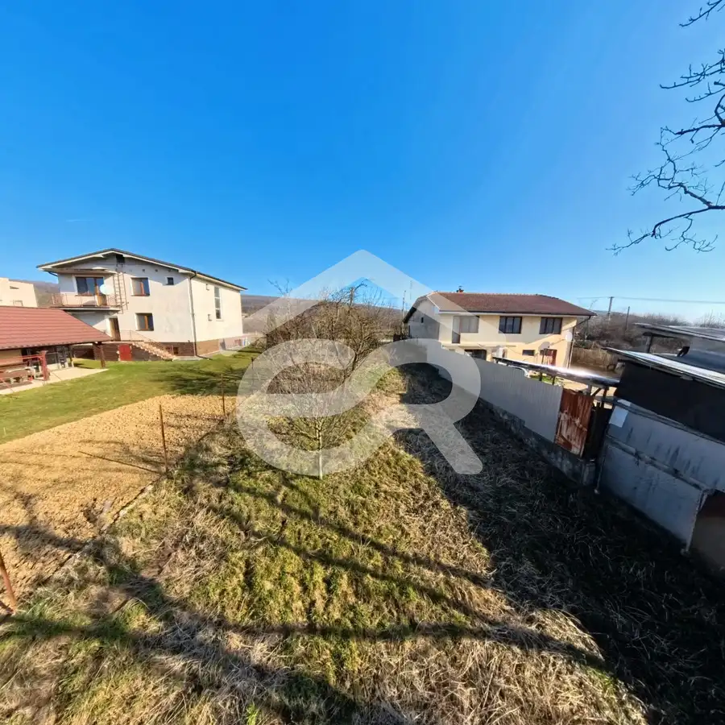
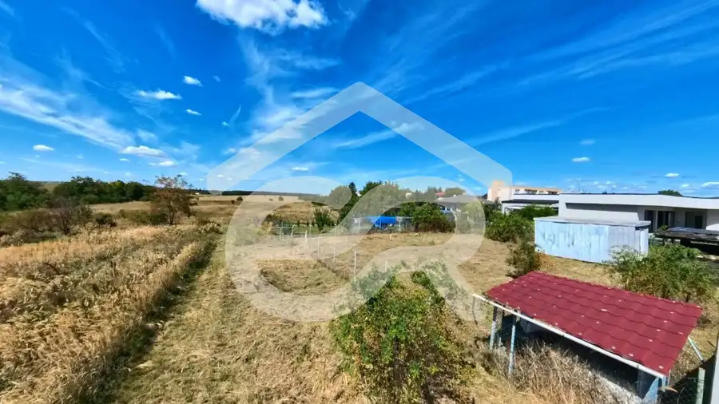
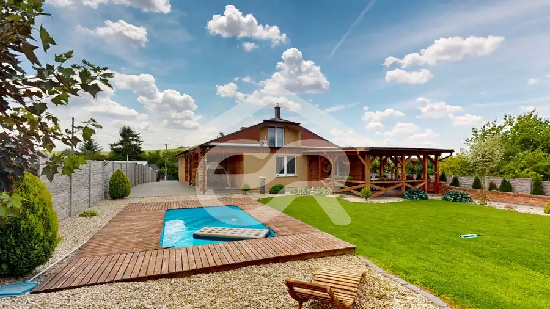
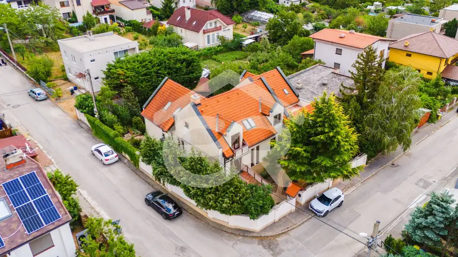
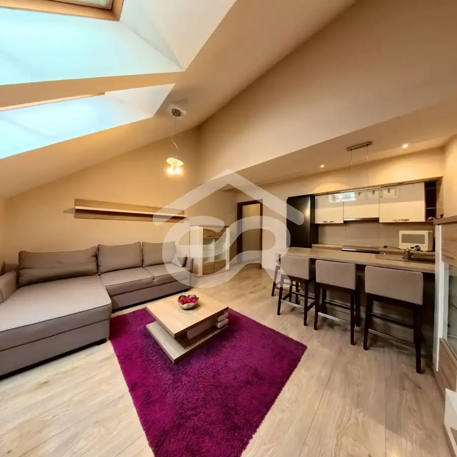
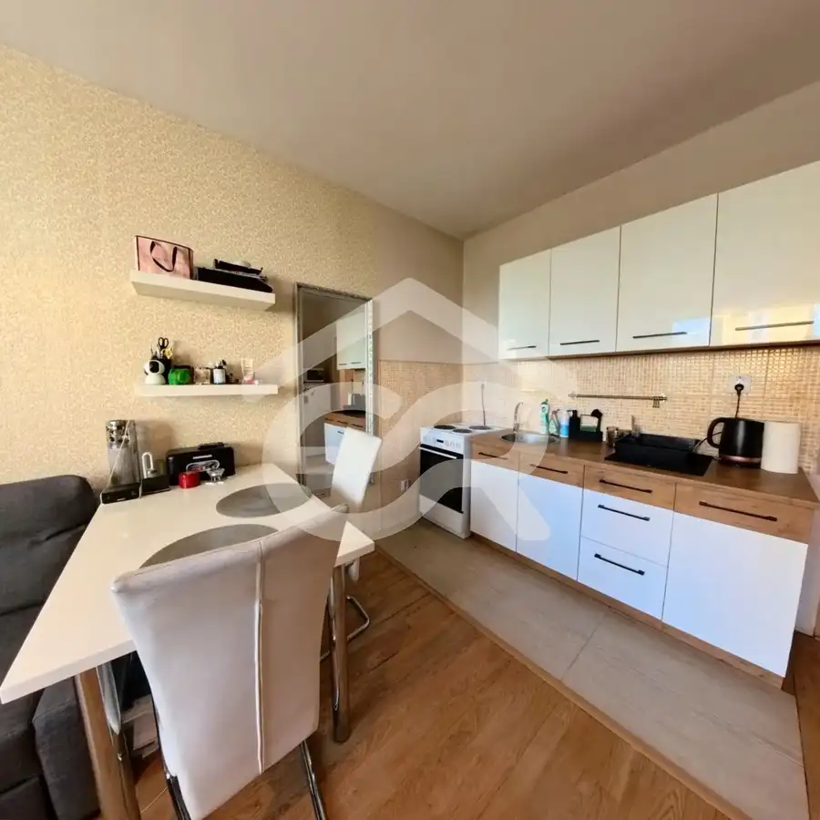

Aktuálna ponuka
Nehnuteľnosti, ktoré ponúkam
10 nehnuteľností na predaj a prenájom. Vyberte typ, alebo napíšte lokalitu.
10 z 10 ponúk
 Rodinné domy
450 000 €Exkluziv reality - Hľadáme 4-izbový RD pre konkrétnu klientku !!
Nitra
4-izbový120 m²
Hľadáme rodinný dom v Nitre pre konkrétnu klientku (Kúpa) Hľadáme modernú novostavbu rodinného domu v Nitre a blízkom okolí pre našu overenú…
Rodinné domy
450 000 €Exkluziv reality - Hľadáme 4-izbový RD pre konkrétnu klientku !!
Nitra
4-izbový120 m²
Hľadáme rodinný dom v Nitre pre konkrétnu klientku (Kúpa) Hľadáme modernú novostavbu rodinného domu v Nitre a blízkom okolí pre našu overenú…
 Rodinné domy9
68 000 €Rozostavaný rodinný dom s potenciálom: Veľký Cetín !!
Veľký Cetín
170 m²
Hľadáte ideálny projekt v okolí Nitry, do ktorého vnesiete svoj vlastný rukopis? Zabudnite na zdĺhavé vybavovanie povolení a kopanie základov. Tento…
Rodinné domy9
68 000 €Rozostavaný rodinný dom s potenciálom: Veľký Cetín !!
Veľký Cetín
170 m²
Hľadáte ideálny projekt v okolí Nitry, do ktorého vnesiete svoj vlastný rukopis? Zabudnite na zdĺhavé vybavovanie povolení a kopanie základov. Tento…
 Pozemok10
24 900 €Únik z mesta na vlastný pozemok: 914 m² pokoja, zelene a ovocia!
Vráble
914 m²
Hľadáte miesto, kde jediným zvukom na pozadí je šum lístia a spev vtákov? Ponúkame vám unikátnu príležitosť získať vlastný kúsok raja v tichej a…
Pozemok10
24 900 €Únik z mesta na vlastný pozemok: 914 m² pokoja, zelene a ovocia!
Vráble
914 m²
Hľadáte miesto, kde jediným zvukom na pozadí je šum lístia a spev vtákov? Ponúkame vám unikátnu príležitosť získať vlastný kúsok raja v tichej a…

Pozemok5 47 700 €Žirany: Stavebný pozemok v tichej časti obce !! Žirany 624 m² Ponúkame vám stavebný pozemok o celkovej rozlohe 624 m², ktorý je ideálne pripravený na výstavbu vášho vysnívaného rodinného domu. Pozemok disponuje… Pozemok7
82 880 €Pozemok v Jelenci - dva prístupy, veľkorysá šírka a blízkosť Nitry !
Jelenec
1193 m²
Hľadáte ideálne miesto pre výstavbu svojho vysnívaného domu, kde budete mať dostatok súkromia, priestoru a zároveň skutočne komfortnú dostupnosť do…
Pozemok7
82 880 €Pozemok v Jelenci - dva prístupy, veľkorysá šírka a blízkosť Nitry !
Jelenec
1193 m²
Hľadáte ideálne miesto pre výstavbu svojho vysnívaného domu, kde budete mať dostatok súkromia, priestoru a zároveň skutočne komfortnú dostupnosť do…

Záhrady6 35 500 €Záhrada s ideálnou výmerou 444 m² v Nitre ! Nitra 444 m² Predstavujem vám na predaj slnečný pozemok s výmerou 444 m², ktorý sa nachádza vo vyhľadávanej lokalite Nitra – Južný prameň. Pozemok je vedený ako…
Rodinné domy10 Cena dohodouHarmónia priestoru a štýlu: Prémiové rodinné sídlo v obci Lehota Lehota 7-izbový265 m² Hľadáte nehnuteľnosť, ktorá okamžite očarí svojou veľkorysosťou a moderným dizajnom? Táto výnimočná 7-izbová vila v prestížnej lokalite Lehota pri…
Rodinné domy10 495 000 €Rodinné sídlo s neopakovateľnou atmosférou a výhľadom na Zobore ! Nitra 9-izbový500 m² Hľadáte pre svoju rodinu skutočný domov, ktorý vás očarí svojou veľkorysosťou, teplom a absolútnym pokojom? Ponúkame na predaj výnimočný,…
Byt9 Cena dohodouModerné bývanie pri parku: 2 izbový byt v Nitre, Priehradná ulica! Nitra 2-izbový46 m²1. podlažie Hľadáte moderné a útulné bývanie v Nitre, kde sa stačí len nasťahovať? Ponúkame na prenájom štýlovo zariadený a kompletne zrekonštruovaný 2-izbový…
BytRezervované10 107 000 €Ideálna investícia! Zariadená garsónka Nitra 26 m²4. podlažie REZERVOVANÉ !! Hľadáte zabehnutú investíciu, ktorá vám bude zarábať hneď od prvého dňa? Ponúkame vám skvelú príležitosť v podobe útulnej a kompletne…Tomuto výberu zatiaľ nezodpovedá žiadna ponuka. Napíšte mi, čo hľadáte.
Hľadám pre klientov